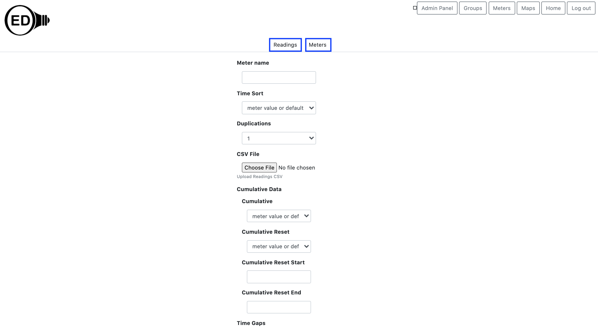

OED Documentation
CSV Import
Version V0.8.0
The latest version of this page is V1.0.0.
Documentation overview
Admin documentation
Information
Site Management
Data Acquisition
Site Installation
User documentation
Documentation versions for this page
These features are only available to select people who oversee the OED site (called admins) so this information is not usually of interest to a general user.
This feature is also available to people logged in as a user with the CSV role.
Overview
The canonical format for OED to acquire information is the vendor neutral CSV (Comma Separated Values) format. It is used for both importing meter and reading information. This is the same format used for reading export so exported data can also be imported into OED. The mechanism is the same for both meters and readings but the details vary given the information being imported is different. This section has information that is shared by both imports along with links to pages with details on each type of import.
Usage
Ways to import CSV data
OED supports the import of CSV files via a web page and via direct file upload (normally done via a script). The information needed and the CSV file uploaded are the same but the details of two mechanisms vary. Each mechanism is described in the next two sections.
CSV file upload via the web page
If you click on the "CSV" button in the top, right of the main OED screen you will go to the CSV page shown below. Note that a user must have CSV privileges to see the "CSV" button. This is an OED user with overall "admin" rights or just "csv" rights. See the admin user page for more information on users. 
There are now two tabs near the top of the page (highlighted in blue boxes): one for "Readings" and one for "Meters" where each imports the a CSV file with the expected import information. The initially selected tab is normally the "Readings" one. This page allows for setting options and selecting the desired CSV file and are described on the upload help page for each type of upload (see later for appropriate links).
CSV file upload via direct file upload
Direct file upload is accomplished via HTTP POST request that is often done using the curl command via a script. A sample line to upload a meter is: curl https://myuniv.edu:3000/api/csv/meters -X POST -F 'email=csvadmin@myuniv.edu' -F 'password=something' -F 'csvfile=@meterinfo.csv.gz'
where the command can be understood as follows:
curl: The command to mimic an HTTP request.https://myuniv.edu:3000/api/csv/meters: https://myuniv.edu would be replaced with the URL of where your OED site is located. This specifies where the HTTP request is sent and how it is routed within the OED application (in this case to the api for csv for meters). OED encourages you to use https (assuming you site is set up to accept secure connections) so the transmission of user and password is secure. You can use http: if that is necessary for your site. Note you would replace "meters" with "readings" if you were sending a reading CSV.-X POST: Indicates the type of HTTP request being made. This is required and always the same.-F 'email=csvadmin@myuniv.edu': All values are sent by placing them after "-F". They are a key/value pair separated by an equal (=) sign. The value on the left of the equal sign is the key that is known as the parameter. The value on the right of the equal sign is the value for this parameter. For this key/value, the email address ("email" parameter) of an admin with CSV rights is being supplied with the value "csvadmin@myuniv.edu". The next key/value pair is for the "password" (parameter) and "something" (assumed password for the OED user csvadmin@myuniv.edu). These two parameters must always be provided so OED knows that only appropriate people are submitting requests. Note that if the user email is not in the OED system then OED will return the message:
where csvuser@myorg.com would be the email you actually provided. If the user password is incorrect then OED will return the message:<h1>FAILURE</h1>QueryResultError { code: queryResultErrorCode.noData message: "No data returned from the query." received: 0 query: "SELECT id, email, password_hash, role FROM users WHERE email='csvuser@myorg.com';" }
<h1>FAILURE</h1>Error: Invalid credentials-F 'csvfile=@meterinfo.csv.gz': This supplies the name of the CSV file with the information for uploading. The parameter name is "csvfile" and the value is "@meterinfo.csv.gz". Note the file information must be preceded with an @ sign. In this example the file is in the same directory as where the curl command runs. If there was a path to the file then it would precede the file name using the format for the OS for the computer running the curl command. For example, if it was in the "csv" folder under the directory where the curl was run then on a Linux system you would use "-F 'csvfile=@csv/meterinfo.csv.gz'". Note that in this case the CSV file is gzipped so it has a .csv.gz file extension. Note the csvfile parameter must be the last one given on direct file upload.
There are many more parameters that can be used and they are described on the pages for readings and meters upload (see links below). Note that to upload readings you use curl myuniv.edu:3000/api/csv/readings -X POST -F 'email=csvadmin@myuniv.edu' -F 'password=something' -F 'csvfile=@meterinfo.csv.gz' where many more parameters are allowed.
The web page upload does certain checks and restricts input of values for the parameters. The curl command uses the values provided. Thus, it is possible to get problematic values farther into the OED upload process when you use curl. This isn't a bug in OED but noted so you are aware.
Returned information
Whenever a CSV upload is requested, OED returns information about the request. This information is in HTML format because it can contain a lot of information. You may find it easiest to copy the returned information into a file with the extension ".html" and then open that file in a web browser so it is nicely formatted. In the case of the web page, the returned information is shown as a popup window on the CSV web page. You need to click "OK" to close the window even if there are no issues. This is done to be sure you can easily see and copy anything returned. Some web browsers limit the number of lines you see so there will be something like "..." at the end. In this case you need to look at the log to see them all. In the case of direct file upload, the information is returned to the command that sent the request. This generally means it comes back to the script/command you used. OED also returns a valid HTTP code where it sends code 200 if all data was processed and stored and code 500 if any data was not accepted. If all data was accepted then the returned message will begin with "<h1>SUCCESS</h1>" and if there was an issue it will begin with "<h1>FAILURE<h1>". These are generally followed by additional information. Note OED can return a different error code and message under unusual errors but the code is always something different from 200.
Getting the process working
It may be easiest to test CSV upload via the web page and/or issuing a single direct file upload with limited data outside a script to be sure everything is set up properly. Once any issues are resolved, an automated or script-based process should normally work well. You can create a dummy meter for this process and then set it not to be displayed. Note it is important that any automated system detect the errors OED returns so they are properly dealt with. Otherwise, errors may go unnoticed and cause other issues.
Meters and readings specific information
Information specific to meters is on the meters import page and information specific to readings is on the readings import page
Details
None at this time.